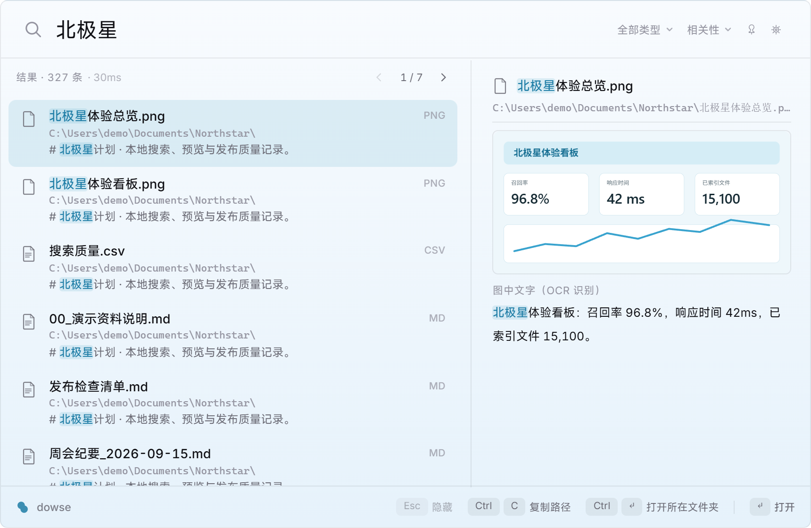

目前支持什么
Dowse 的桌面版、CLI 和 MCP server 使用同一套本地索引。它适合资料长期放在固定目录、需要反复按正文查找的场景。
- 文件内容
- 纯文本、Markdown、源代码、PDF、DOCX、XLSX 和 PPTX。旧的 GBK 文本也会在索引前自动识别。
- 图片文字
- 调用 Windows.Media.Ocr 离线识别 PNG、JPG、WebP 和 BMP，不需要上传图片。
- 中文搜索
- jieba 分词配合 BM25 排序；多词默认同时出现，也支持短语、路径、时间、大小和扩展名筛选。
- 索引更新
- 运行期间监听文件变化，启动时补查离线期间的修改；新增目录不需要重建已有索引。
- 结果操作
- 键盘选择并打开文件，也可以在右键菜单中打开、定位到文件夹、复制路径或文件名。
- 大量结果
- 结果每页 50 条；只有超过一页时才显示紧凑页码，也可以继续按方向键跨页。
设置入口不再藏在托盘里
点击窗口右上角的齿轮，或者在窗口内按 Ctrl+,，都可以打开设置。首次运行默认使用纯色背景；喜欢透明效果时再手动打开。
- 修改全局快捷键
- 开关透明效果并选择透明度
- 设置开机自启和界面语言
- 调整排除目录、额外文本扩展名和单文件大小上限
托盘右键菜单仍然保留这些常用入口，并新增使用指南和问题反馈。

搜索窗口的日常操作
输入时即时搜索；方向键切换结果，Enter 打开，Ctrl+Enter 在资源管理器中定位，Ctrl+C 复制路径。
- 空输入时显示最近 10 条搜索，可复用或删除
- 按文档、代码和图片筛选结果
- 按相关性、修改时间或文件大小排序
- 固定窗口后，失去焦点时不会自动隐藏
支持的格式
桌面版只会索引你主动添加的目录。默认规则会跳过常见依赖、构建产物和版本控制目录，也可以在设置中修改。
| 类别 | 格式 | 处理方式 |
|---|---|---|
| 文本与代码 | TXT、Markdown、常见源代码和配置文件 | 检测编码后直接提取文本 |
| 带文本层的 PDF | 提取已有文本层；纯扫描 PDF 暂不做逐页 OCR | |
| Office | DOCX、XLSX、PPTX | 解析 Office Open XML 正文 |
| 图片 | PNG、JPG、WebP、BMP | 使用系统 OCR 语言包在本机识别 |
只读 MCP server
dowse mcp 提供搜索、长预览、受限的索引正文分块读取和索引状态四个工具。它只读取现有索引，可以和桌面版同时运行，不会替 AI 修改文件或打开任意路径。
Claude Code
claude mcp add --scope user dowse -- dowse mcp其他 MCP 客户端
{
"mcpServers": {
"dowse": {
"command": "dowse",
"args": ["mcp"]
}
}
}安装和第一次索引
桌面版不要求管理员权限。当前安装包尚未签名，第一次运行时 Windows SmartScreen 可能会要求你确认来源。
- 从 GitHub Releases 下载文件名以
setup.exe结尾的安装包。 - 启动 Dowse，先添加一个经常需要搜索的资料目录，等待第一次文本索引完成。
- 按
Alt+`打开窗口并开始搜索；图片较多时，OCR 会继续在后台处理。
常见问题
Dowse 会上传我的文件或搜索词吗？
不会。解析、索引、OCR 和查询都在本机完成，应用不包含遥测。本地索引中保存了提取出的文本，因此仍应像源文件一样保护。
能搜索扫描版 PDF 吗？
目前会提取 PDF 已有的文本层。图片 OCR 面向单独的图片文件，尚不会把纯图片扫描 PDF 的每一页转换成可搜索文字。
必须用管理员权限运行吗？
不需要。普通索引和搜索可以在标准用户权限下运行；管理员权限只会在条件允许时启用更快的 NTFS MFT / USN 路径。